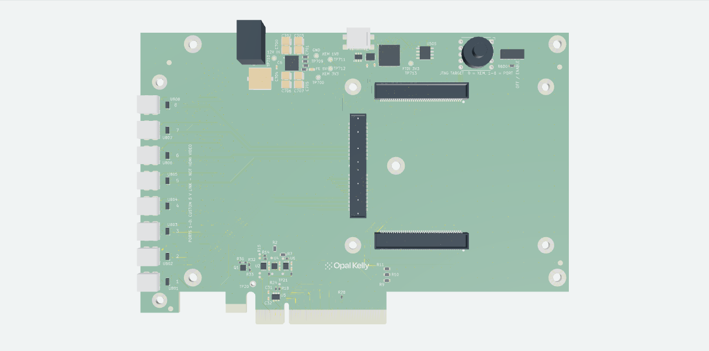
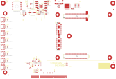

BRK8310-derived carrier · AU25P
HDMI Extension Board.
Eight HDMI ports. Shared power and JTAG. PCIe ×4.
V5 schematic · V3 placement study
- 8
- HDMI ports
- 6
- copper layers
- 267
- circuit components

Loading 3D…

Loading schematic…
Click a part to inspect it.Unrouted placement · TP710–TP713 await PCB placement
Components
267 schematic components · 263 present in the V3 placement.
| Reference | Value / part | Circuit |
|---|
No matching parts.
6 PCB-only features
Six additional mounting/fiducial features. The four module mounting holes are already counted in the schematic.
Files
Saved 1 November 2026. Keep V5 circuit and V3 placement identities when opening or sharing.

Opening guide and scope · View PDF · Top layout SVG · Bottom layout SVG


Sources and check results
Two saved snapshots. The current V5 one-page schematic contains 267 components. V3 contains 263 of these plus six PCB-only mechanical/fiducial features. TP710–TP713 are in V5 and await placement. All 1,423 existing named pin/net memberships agree. V3 retains its earlier paired schematic; it is not a synchronized release of the current V5 circuit.
Fresh saved-rule ERC: 0 errors and 190 warnings. PCB DRC: 453 findings and 499 unconnected-item reports. Ignored checks are recorded in the summary. The layer stack and impedance rules are provisional. Routing, bracket/plug fit, support holes, silkscreen, power and crystal placement, cable power and hardware qualification remain open. No fabrication release.
3D scope. Native board surfaces and 238 independently authored nominal component envelopes at saved positions. The XEM assembly, bracket, cables and enclosure are not included. Public KiCad archives include local 2D libraries and omit supplier models and model references. The downloadable GLB supports placement review; it is not a mechanical fit model.
Product name: HDMI Extension Board. Original Opal Kelly BRK8310 source identifiers and historical library names are retained. Circuit references remain directly on the schematic.
Source hashesCheck summaryERC reportDRC report3D provenanceComponent data